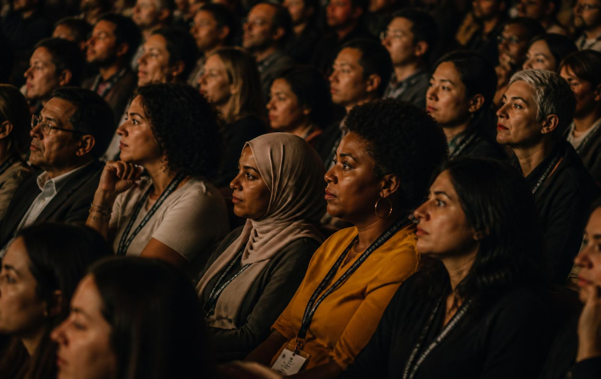
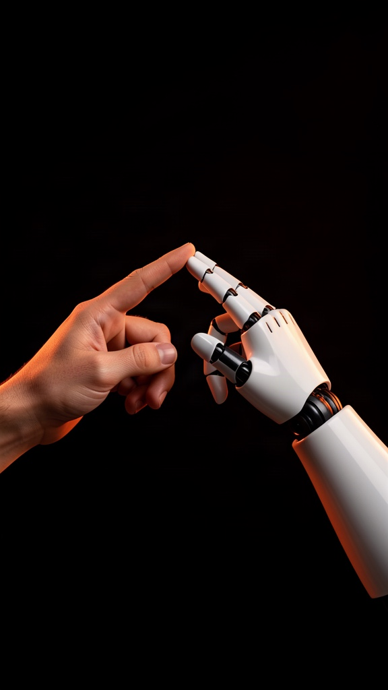
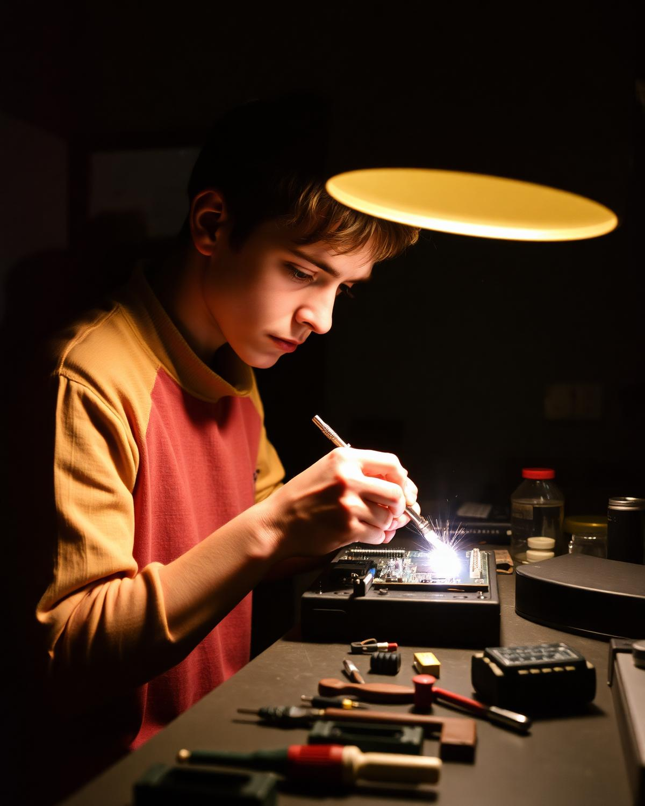
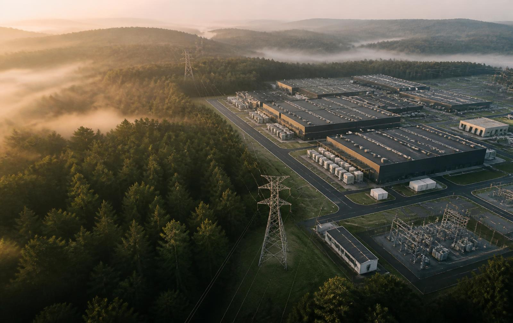
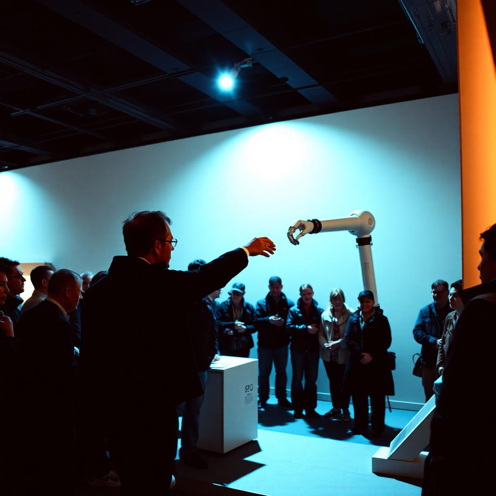
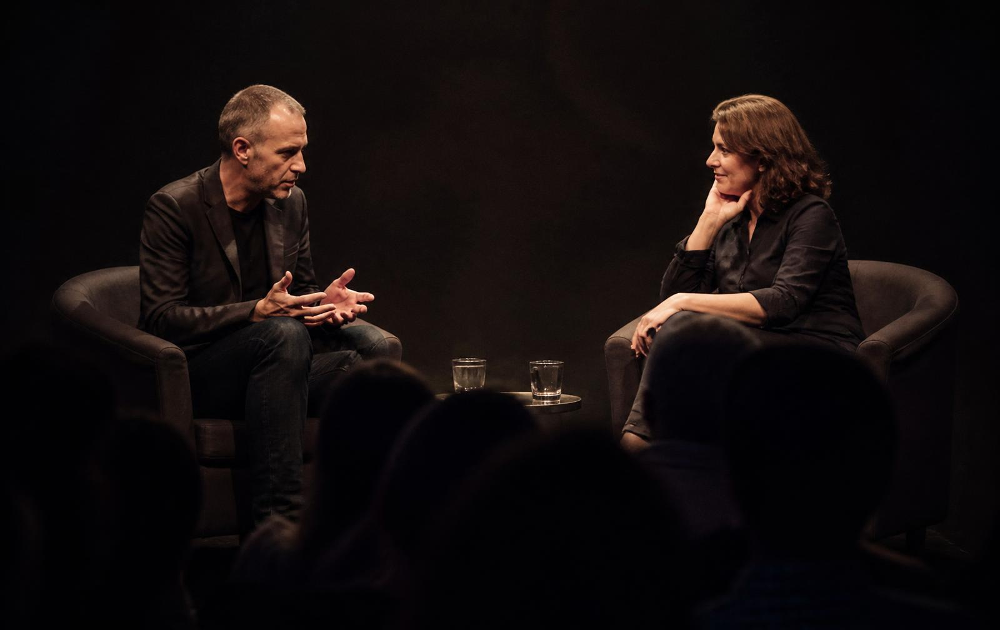

Human
How do we stay human?
- What should never be automated?
- Are we outsourcing our thinking?
- What should remain human?
Sac Tech Week capstone summit Tickets announced to subscribers first
Technology. Humanity. Together.
A gathering for the people building, questioning, experiencing and imagining the future of technology.
+ Who it's for

If you've ever asked "should we?" out loud — this is your room.
+ Capability is not the same as progress
We go further when humans and technology work together.
Tandem asks
And what kind of world are we creating together?
The Tandem Principle
It means putting human needs, agency, dignity and the health of our planet into the conversation from the beginning—not after the technology has been built.
+ The Conversation — six tracks
How do we stay human?

02What does it mean to work in Tandem?
How do we live together?

04What are we actually creating?

05Human-first isn't human-only.
What are we choosing?

The Tandem Experience
Big questions and unexpected conversations with the people shaping what's next.
Live demos of AI, robotics, accessibility and climate technology.
Ask why it was built, who it's for, and what the creators chose not to build.
Interact with the technology and decide for yourself:
Does this make our lives better?
The Tandem Experience
The big questions. The cultural moments.
Closer. Deeper. More intimate.
The Speaker Philosophy
The magic happens between them.
+ The Day — 9:00 AM to 5:00 PM
Opening: Welcome to TandemTechnology. Humanity. Together.
—
What should never be automated?Creator + AI builder + humanist
The Creator & the MachineIntimate interview on creativity, AI & identity
Break
Break
The New TeammateWhat happens when AI becomes a coworker?
Build With MeLive demonstration + conversation with a builder
Break
Break
Who gets to build the future?Industry leader + emerging founder + community voice
Inside the MachineIntimate fireside with an industry leader
Lunch + Experiences
Lunch + Experiences
What does the cloud cost the Earth?AI infrastructure + climate scientist + Earth voice
The Physical InternetEnergy • Water • Data Centers • Materials
Human + MachineAI + robotics + artist/creator
Show Me the FutureEmerging builders + live demos
Closing Fireside: The Future Is a Choice
—
Tickets not yet released
The Sac Tech Week newsletter gets the first ticket announcement.